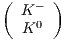

Searching for Neutral Kaon Rare decay
KL → π0νν
Jia Xu
January 13, 2014
Contents
1 Introduction
The long-lived neutral Kaon KL has rare decay KL → π0νν which is a CP violating
process. It happens at very low rate, and the branching ratio for this process to
happen is calculated to be (2.49 ± 0.39 ± 0.06) × 10-11[?] with very small
theoretical uncertainties. It has attracted particle physicists’ interests in its
ability to test the Standard Model (SM) by giving accurate measurement of
Cabibbo-Kobayashi-Maskawa (CKM) matrix element parameters. Also, as a flavor
changing neutral current (FCNC) process, the mechanism behind this process is
forbidden at tree level in the SM, and can only proceed through higher order
diagrams. The rate is therefore very sensitive to short distance effect, i.e. high energy
scale effects beyond the current accelerator energy scale. As a result, it is an excellent
tool for probing the Beyond Standard Model (BSM) extensions which are at energy
scale at TeV.
In this chapter, we will start with the brief description of Kaon phenomenology by
giving the basic terminology, focusing on its CP violating properties. Following that
will be the discussion on how the branching ratio measurement of KL → π0νν will be
a good tool to test the SM. It will be followed by the prediction of the branching
ratio from different BSM extensions.
2 Kaon Phenomenology
The most astonishing phenomenon in K meson system is CP violation. There’re three
important discrete symmetries in quantum field theory: Charge conjugation (C), i.e.
convert the particle to its anti-particle; parity (P), by inverting the spatial
coordinates and time reversal (T), meaning time inversion. CP violation means that
theory (electroweak theory, specifically) is not invariant under the combinational
action of charge conjugation and parity. For example, the long-lived Kaon KL is
mostly a CP odd state, i.e. CP = -. And also, a neutral pion π0 has
parity eigenvalue -1, since it’s a pseudoscalar. A state of two π0s, if the total
momentum L is 0, has paritiy equals (-1)2+L = 1. If CP is conserved, the KL cannot
decay ino π0π0 state via weak interaction. But experimentally, people observed this
to happen but at very low rate. Moreover, field theory assumes CPT to be a good
symmetry. So for CP violation processes, the T inversion will not hold any more.
The K mesons,  and its charge conjugation  form
strong isospin = 1∕2 doublets. For the neutral Kaon system, the two strong
eigenstates K0 and K0 have quark constituents (ds) and (ds) respectively. In
the context of the CP violation in the neutral Kaon system, neither K0
nor K0 are weak eigenstates. Instead, they follow the following equations
form
strong isospin = 1∕2 doublets. For the neutral Kaon system, the two strong
eigenstates K0 and K0 have quark constituents (ds) and (ds) respectively. In
the context of the CP violation in the neutral Kaon system, neither K0
nor K0 are weak eigenstates. Instead, they follow the following equations
As a result, the CP eigenstates noted as K1 and K2 can be constructed via
Consequently, K1 and K2 will have CP eigenvalues -1 and +1, respectively. Life
would be boring if the real life stable particles KL and KS (which stand for
long-lived Kaon and short-lived Kaon), which are mass eigenstates such that they
don’t oscillate, are the K1 and K2 with specific CP. In contrast, what happens is
that experimentalist in the 60s detected decay KL → π+π-, and similar
to the example given in the beginning of the section, this process is CP
violating. There are two sources of the CP violation: indirect CP and direct CP
violation. In the indirect CP violation case, the mass eigenstates KL and KS
are not exactly the CP eigenstates, but with a little mixing coefficient ϵ:
The absolute value of ϵ is 2.3 × 10-3. On the other hand, the direct CP comes
from the weak interaction itself, and this effect is even smaller (denoted as ϵ′).
Experimentally, the real part of ϵ′∕ϵ ≈ 1.67 × 10-3.
3 KL → π0νν in the Standard Model
3.1 The ”golden” Flavor Changing Neutral Current process
The flavor structure in the SM implies that in weak interactions, quarks with
different flavors, i.e. from different families, cannot convert to each other without a
change of charge. Such kind of processes is called Flavor Changing Neutral Current
(FCNC) processes, where the neutral current is specific to Z0 boson. A good
example of FCNC vertex is s → dZ0, and this vertex describes processes
like K0 → l+l-, where l can be e,μ, or τ; K+ → π+νν, and most of all,
K0 → π0νν.
Because such FCNC processes are forbidden at tree level in the SM, they can only
proceed through higher order loop diagrams with two W± interchanges which allows
both the change of flavor and a conservation of charge. It’s known that loop
diagrams are suppressed by the small weak coupling constant, and thus such
FCNC processes are generally rare processes happening at very low rate.
If there is a new theory, which provides new diagrams to the rare process
and the rate is altered, then such deviation will be sensitively detected.
The energy scale these rare processes correspond to can be 100 TeV or higher, which
provides a detour to measure high energy physics without building an expensive
accelerator with higher beam energy. On the down side, FCNC processes are rare,
therefore they usually require a high luminosity beam, and a good handle of the vast
background.
To conclude, the FCNC process physics, usually called accurate measurement, is to
measure rates or other quantities of SM highly suppressed processes. If any deviation
from the SM is observed, it will be able to eliminate new physics or some parameter
space of some new theories.
3.2 SM prediction of the branching ratio
The effective Hamiltonian describing K+ → π+νν and KL → π0νν has the form
[?]:
Different terms will be explained below: V ij are CKM matrix elements which we
will discuss in section 3.2.1, the first XNL term describes the contribution from
charm quark contribution, and the second term is where the penguine diagram
contribution lies in with xt = mt2∕MW2, and X(xt) is a monotonically increasing
function with respect to xt.
There are two types of diagrams contributing to the branching ratio shown in
Fig. 1: the Z0 penguine diagrams and the box diagram. It is helpful to note
that for the Z0 penguin diagrams, the internal top quark dominates due to
its big mass, and the charm quark dominates the box diagrams because it
has comparable masses compared to the leptons in the loop. The above
Hamiltonian includes the next-leading-order and next-next-leading-order QCD
corrections.
For KL → π0νν, it has merits over K+ → π+νν. The reason is that the neutrino
pair is in a CP even eigenstate, so this process is pure CP violating. As a result, the
charm quark contribution is only approximately 1% , and can be neglected. So the
branching ratio can be expressed as
where κL = (2.231 ± 0.013) × 10-10![[--λ-]
0.225](Chapter_1_4ht9x.png) 8.
8.
Here, the λ is |V cb| and the λt = V ts*V td. KL → π0νν has very small theoretical
uncertainties. The KL form factor does not depend on lattice QCD calculations,
which has big uncertainties. Instead, it can be extracted from KL semi-leptonic decay
rates. The parametric uncertainties in the expression resides in three parts: mt, Imλt
and κL.
This section will be concluded by citing the numerical results for equation 5. the SM
calculation on the KL → π0νν branching ratio including 2-loop QCD and
electroweak contribution is (2.43 ± 0.39 ± 0.06) × 10-11, and total theoretical
uncertainties is 2.5%. The first error is parametric uncertainties and the second error
is from remaining theoretical uncertainties [?].
3.2.1 Accurate Measurement of the CKM Unitarity Triangle
The CKM matrix represents the transformation between the flavor eigenstates and
mass eigenstates of three generations of quarks. V CKM=
One property of the CKM matrix is that it’s ”mostly diagonal”. Numerically, the
off-diagonal entries |V us| = 0.23, and |V ub| = 4.2 × 10-3. To better show the mostly
diagonal structure of the CKM matrix, people uses the Wolfenstein parameterization
defined below.
The equation 6c looks very cumbersome and unnatural, but it turns out that with
this definition, the parameters ρ and η will be the apex of the Unitarity Triangle
(UT), which will be discussed further.
CKM matrix is a unitarity matrix, i.e.
This equation, if drawn in the complex plane, will form a triangle for which the
vertices are (0,0),(1,0) and (ρ,η). The equation 5, if represented in the wolfenstein
parameters, will become
So the branching ratio of KL → π0νν is proportional to the height of the unitarity
triangle. Accurate measurement of KL → π0νν branching ratio therefore can give
accurate measurement of CKM parameter η in lack of hadronic uncertainties.
We will not dig into the similar discussion for K+ decay but will simply cite the
result: the branching ratio of K+ decay is proportional to one side of the UT as
shown in Fig. 2. There exists a ’golden relation from which the measurement of the
two branching ratios can determine the UT completely. Specifically, the angle β can
be measured with high accuracy free from any hadronic uncertainties. At the same
time ,the angle β can also be derived from another path of the CP asymmetry
of B → ψKS decay. When considering the BSM extensions, however, the
golden relation will be broken in different ways and can be experimentally
identified.
3.3 Grossman-Nir bound
We’ve seen that it is hard to talk about KL → π0νν without constantly referring to
its charged counterpart K+ → π+νν since they both go under the same Feynman
diagrams at quark level. There’s a bound called Grossman-Nir bound which gives an
upper limit on the branching ratio of the neutral decay with respect to the charged
decay by giving[?]
The bound is derived from only the isospin symmetry and is model independent.
The angle θ is defined to b rhe relative phase between the K -K mixing and
s → dνν decay amplitude. And the following identity is straightforward to be
derived:
At the same time, isospin symmetry gives A(K0 → π0νν)∕A(K+ → π+νν) = 1∕.
Considering the isospin breaking factor to be 0.954[?], and the lifetime of the two
Kaons τKL∕τK+ = 4.17, the equation 9 can be obtained.
4 Probing the Beyond Standard Models
We’ve known that the complex phases in the off-diagonal elements of the CKM
matrix will contribute to the CP violation. Then the question to ask is whether such
contribution is enough. The Hamiltonian describing the Kaon decays in equation 4 is
generic and model independent. For various beyond standard Models (BSMs), the
difference entirely resides in the funtion X(xt) and an additional complex phase is
brought in.
 | (11) |
In the next few sections, the impact of different BSMs on the amplitude or the
complex phase of the X function will be reviewed.
4.1 BSMs with Minimum Flavor Violation (MFV)
MFV is a catagory of simplest SM extensions. Under MFV assumption, the
contribution of new operators not present in SM is neglegible, so only the (V-A)
⊗(V-A) operators identical to equation 4 are kept. And the phases in the CKM
matrix is still the only contribution to the CP violation. All the SM extensions
with MFV have the complex phase θx = 0 or π. However, they affect the
amplitude by introducing diagrams with new particles in the internal loop.
To be explicit, the function X(xt) should be replaced by a real-valued function X(ν)
and ν represents a set of parameters of a given MFV model. Moreover, the X(ν)
function can be either positive or negative according to different θx (Later analysis
shows that the negative solution is neglegible). The model independent result which
is related to KL → π0νν is that it gives a tighter bound of its branching ratio with
respect to K+ → π+νν shown below:
where B1 and B2 are the reduced branching ratios: Br(K+ → π+νν)∕κ+ and
Br(KL → π0νν)∕κ0 respectively, and the angle β is unfixed but can be
calculated from aψKs, and σ is a constant equals 2. Recall the
latest experimental result of K+ → π+νν branching ratio measurement:
(Note: this result is 2004 result, need to update the results with 2008 result)
[?]
and aψKS ≤ 0.719, we can get in MFV models, the upper limit of KL → π0νν
branching ratio is 2.0 × 10-10.
To conclude, with the improved measurements of aψKs from B meson decays, the
MFV extensions will not allow too much deviation from the SM. This indicates that
if large deviation of the branching ratio is observed (a factor of 2 larger, for example),
new CP violating phases must exist.
4.2 SM extensions with large θX
We start with a model independent discussion. In this case, the X(xt) function will
be complex as expressed in equation 11. The KL branching ratio is changed
to
where βX = β - βs - θX, and β and βs are phases of V td and V ts. Figure 3 shows
the branching ratios of K+ and KL decays with scanning different values of βX and
|X|.
4.2.1 Littlest Higgs Model with T-parity
The Littlest Higgs Model is that the global SU(5) symmetry is spontaneously
broken into SO(5) at 1 TeV energy scale, and new particles are introduced
including the heavy gauge bosons WH±, ZH and AH, the heavy top T and
scalar triplet Φ. One of the merits of the Littlest Higgs models is that it
resolves the quadratic divergence of the Higgs mass by introducing new
diagrams from these new particles. One of the series of Littlest Higgs Model
that is very sensitive to KL → π0νν branching ratio is the Littlest Higgs
model with T symmetry(LHT). With this extra symmetry requirement,
new quarks and leptons are introduced. Their interactions with the SM
quarks involves new unitarity matrices, and new flavor violating phases are
introduced therein. Here, we simply cite the relevant result without digging deeper
into theoretical discussions. First of all, a large range of |X| and θX can be
predicted:
As a consequence, an enhancement of the KL → π0νν branching ratio is possible.
Fig. 4 shows the predictions of the two Kaon branching ratios under different senarios
of LHT, as shown by different colors. We can observe two branches, one of which
shows no significant deviation from the SM, where the other shows large
enhancement of the neutral mode, assuming that the K+ branching ratio is less than
2 × 10-10.
4.2.2 Minimal Supersymmetrical Model
Minimal Supersymmetrical Model (MSSM) is another way to resolve the Higgs
quadratic divergence by doubling the number of fields. Flavor violation is natural
from the Yukawa superpotential. In the superpotential, relavant terms are
expressed
[?] where λuij and λdij are the coupling constants between family i and j, which is
similar to the CKM matrix. Q, U and D are chiral multiplets, and Hu and Hd are
two Higgs fields. In general, the two coupling matrices cannot be diagonalized
simultaneously, so terms violating flavor number exist. One of the mechanisms is to
introducing diagrams from chargino loops and neutralino loops shown in figure 5[?].
The other of the mechanisms for enhancement is from charged Higgs mediated
penguine diagrams in the region of large tanβ whose diagrams are shown in fig 6[?].
In both cases, sizable deviation from SM is possible within some parameter range.
4.2.3 Z′ models
Z′ is proposed in different BSMs and is able to mediate FCNC at tree level. [?] From
a general point, the mass of the Z′ and the coupling constant (for example, how the
left-handed current and right-hand current couple), will determine the branching
ratios. As shown in figure 7, in different charge coupling senarios and different
masses, sizable deviation can be expected, but with increasing Z′ mass, the
abundance is reduced.